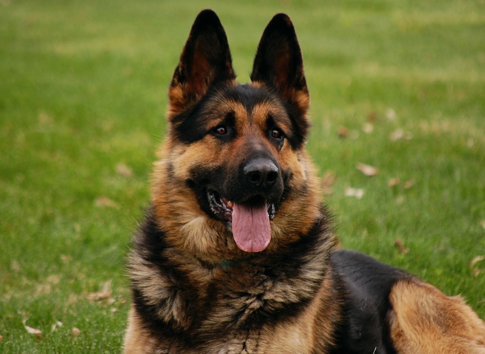

Labrador
- Altura: 55-62cm
- Peso: 25-36kg
- Colores: Negro, Chocolate, Amarillo

Rottweiller
- Altura: 56-69cm
- Peso: 30-60kg
- Colores: Negro, marron

Pastor aleman
- Altura: 55-65cm
- Peso: 22-40kg
- Colores: Negro, Negro y canela, Negro y fuego

Dogo
- Altura: 60-68cm
- Peso: 35-45kg
- Colores: Blanco

Golden
- Altura: 51-61cm
- Peso: 25-34kg
- Colores: Oro oscuro, Dorado, Crema
Border collie
- Altura: 46-56cm
- Peso: 12-20kg
- Colores: Negro, Blanco, Rojo mirlo